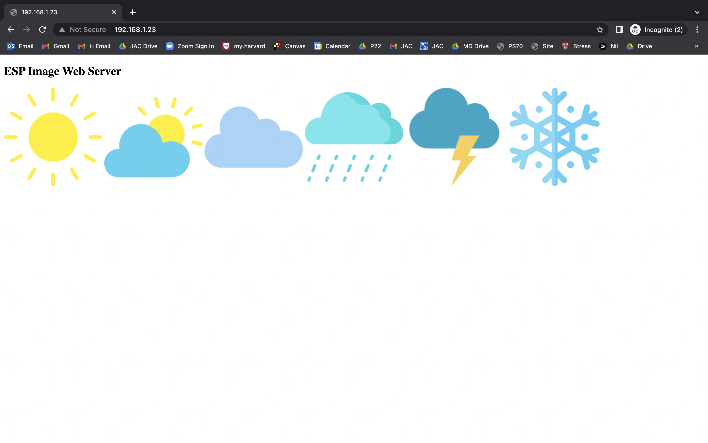
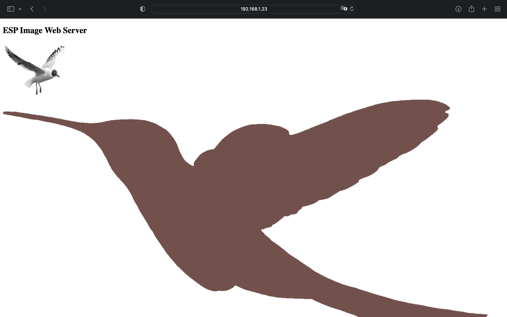

<div class="container-fluid">
<h3 style="text-align: center;"> Week 9: Radio, WiFi, Bluetooth (IoT) </h3>
<h4 style="color: black;background-color:#6EDCF7;"> ESP32! </h4>
<p>This week we started working with devices that can use wifi and bluetooth which for some reason is mind boggling to me. I loved the ESP32 cam we learned to set up in class (see video below of me enjoying it arguably too much). </p>
<center><video width="500" height="auto" controls>
<source src="esp32cam.mp4" type="video/mp4">Your browser does not support the video tag.</video></center>
<p>
For this week’s assignment I decided to try to follow another Random Nerd tutorial, this one to <a href="https://randomnerdtutorials.com/display-images-esp32-esp8266-web-server/">upload images to the ESP32 web server.</a>
</p>
<p>First I had to set up the SPIFFS (Serial Peripheral Interface Flash File System) Uploader to be able to send data to my ESP32. The tutorial was pretty straightforward but it took me a bit to figure out when to have the GPIO 0 pin connected to GND and when to take it out (for example the IP address won’t load if they’re still connected) and also when to press the on board boot button. The uploads failed several times when I just didn’t do things in exactly the right order or in the right way but eventually it worked! Moving back to the image tutorial, I got to download images. For my first try I used the example images they provided and after uploading the sketch data, uploading the code, and connecting to the web server, there they were!
</p>
<center></center>
<p>
Next, I wanted to try finding my own images and making sure I could edit the code. When I went to upload the sketch data this time, I weirdly had the opposite problem as the first time where if I clicked the boot button when it was connecting it would immediately fail. So I tried again and just left it alone and it worked perfectly. But then when I uploaded the code I had to push the button, so now I’m very confused. Still, eventually I got all the uploads to work and after opening the web server, there were my images!
</p>
<center></center>